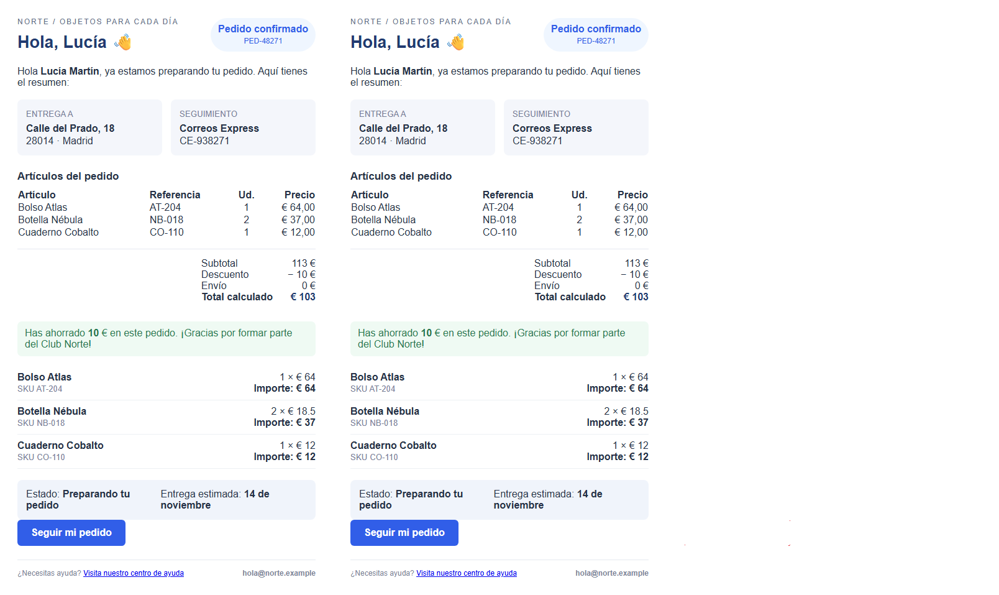

Editor frente a vista previa
Capturas reales con Chromium y comparación de imágenes mediante OpenCV. Izquierda: editor. Centro: vista previa. Derecha: píxeles diferentes en rojo.
Superposición finalMétricasGeometría DOM

Resultados
| Medición | Antes | Después |
|---|
| Altura de la tabla | 141 px | 80 px en ambas vistas |
| Altura del contenido (DOM) | 1015 / 957 px | 957 / 957 px |
| Píxeles diferentes (umbral 25/255) | 12,242 % | 0,001 % |
Se corrigieron los rellenos, colores y bordes añadidos a las tablas importadas, el tamaño del botón, la separación de los hijos de contenedores flex y el enlace dinámico de ayuda.
Método y límites
Mismo contenido de muestra y navegador, escala 1×, ancho del fragmento 536 px (480 px de contenido más 28 px de relleno a cada lado). Se ocultan únicamente las etiquetas, los bordes de selección y los controles del editor; se conserva el diseño del correo. Las capturas finales se alinean a coordenadas enteras para evitar ruido de antialiasing. Las iniciales se tomaron antes de ese ajuste, por lo que parte del porcentaje inicial también incluye diferencias de rasterizado. No se escalan ni deforman imágenes para hacerlas coincidir. El mapa usa la diferencia absoluta de canales y marca un píxel si alguno supera 25. El espacio de una imagen más corta se rellena en blanco para la comparación inicial.
Este resultado corresponde a la plantilla de demostración en escritorio. No implica equivalencia en móvil, otras plantillas ni clientes de correo externos. La geometría de títulos, párrafos, tabla y resumen se conserva en los archivos JSON.
Archivos
Editor finalVista previa finalDiferencias finalesEditor inicialVista previa inicialDiferencias iniciales
Reproducir desde la raíz del proyecto: node artifacts/visual/capture.mjs y python artifacts/visual/compare.py. El script usa las instalaciones locales de Playwright/Chromium y OpenCV disponibles en este equipo.